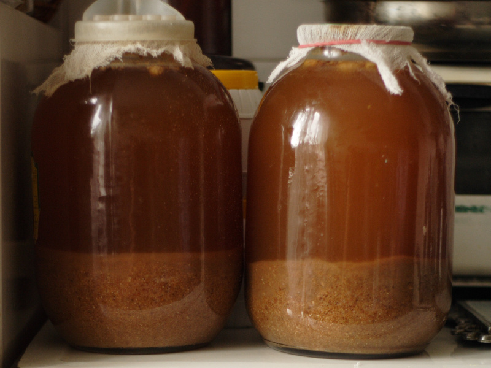

Kvass

Description
Kvass is a fermented drink popular in some slav countries and Baltic countries. Pretty much tastes like apple cider mixed with light beer.
Also good for cure hangover.
Ingredients
- 1.5L water
- 1/3 cup of raisins
- 1 teaspoon dry yeast
- 100g sugar
- 2 slices of black rye or pumpernickel bread
- 1 lemon
- hermetic jars for storage